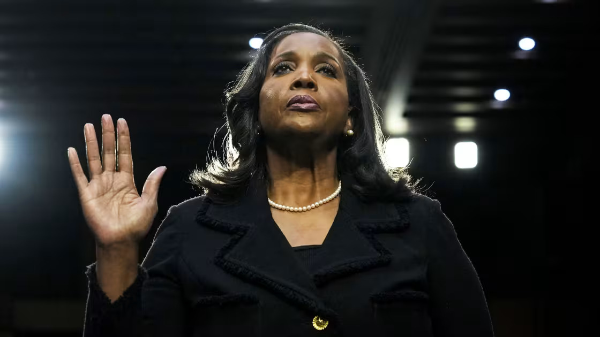
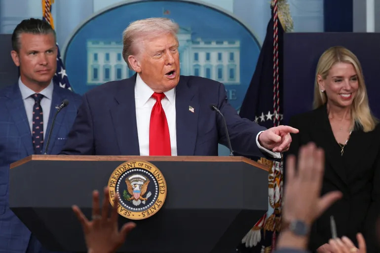

Shaking up independent agencies
Looking into Trump's attempts to influence leadership in federal agencies.
The Terrapin Times
Supreme Court expands Trump’s power over the federal bureaucracy
The Supreme Court greatly expanded President Donald Trump’s control over the federal bureaucracy Monday, but stopped short of allowing him to undermine the independence of the Federal Reserve, in a pair of rulings that amount to one of the largest verdicts on the scope of presidential power in decades.
In a 6-3 ideologically divided decision, the justices struck down a nearly century-old precedent that has allowed Congress to insulate the leaders of the Federal Trade Commission (FTC) and roughly two dozen other independent regulatory agencies from political influence by requiring the president to have good reason to dismiss them.
The ruling is likely to usher in major changes to the structure of the federal government, and it fulfills a major goal of the Trump administration and many conservatives who have long argued that the president should exercise nearly unfettered authority over the executive branch.
In the other related case, a group of justices blocked Trump from removing Federal Reserve governor Lisa Cook, at least for now, in a 5-4 ruling that found the powerful central bank has a distinct history and structure that allow Congress to carve out protections for its governors.

Federal Reserve board member Lisa Cook. Source: Drew Angerer/Getty Images
Taken together, the cases amount to a split political decision for Trump, who has pushed aggressively in his second term to assert his authority over the federal government by dismissing agency heads, restructuring departments and firing thousands of workers.
Trump hailed the ruling in the FTC case as a “BIG WIN” in a post on Truth Social, while saying he would continue the fight to remove Cook.
“90 years of precedent has been COMPLETELY AND UNEQUIVOCALLY OVERRULED, greatly increasing Presidential Power at a time when it is most needed!” Trump wrote.
Republicans said the FTC ruling would make the government more accountable to voters who elect the president, but Democrats and some former agency officials worried it would lead to the politicization of regulations on product safety, elections, nuclear energy and much more. The ruling in the Cook case is provisional, and the case will return to the lower courts for additional legal wrangling.
The majority said the Constitution’s plain language gives the president control of the executive branch, but Justice Sonia Sotomayor, joined by the court’s other two liberals, said in a dissent that the nation’s founders clearly envisioned the existence of agencies whose independence would be protected by Congress. Sotomayor read her dissent from the bench to signal her strong disagreement with the majority.
“Today, the majority replaces 90 years of proven, workable practice with a half-baked theory of executive power that is simultaneously all encompassing yet also subject to necessary but undefined exceptions,” she wrote. “The one thing that does appear to be clear going forward is that chaos will follow.”
Sotomayor said the ruling would upset the structure of numerous agencies — such as the Federal Communications Commission and the Securities and Exchange Commission — that Congress created to make decisions based on nonpartisan expertise and technical knowledge. Most are run by bipartisan, multimember commissions.
Gillian Metzger, a Columbia University law professor and expert on administrative law, said she was struck by the breadth of the FTC ruling, which could give Trump direct control over virtually all federal employees.
There’s language in the Slaughter majority opinion that is exceptionally broad,” she said, referring to the case’s name. “The president has the power to remove at will his subordinates. That is extraordinarily broad.”
Metzger said it was notable that the court cited no exceptions for the civil service protections that shield many federal workers from arbitrary dismissal or political retaliation. That could mean the court is granting the president greater authority to remove federal employees, she said, although other court precedents protect them.
Metzger, like many legal experts, said it was difficult to discern any legal distinction between the Fed and other independent agencies. She said the justices probably blanched at giving the president too much control over the bank, since he might lower interest rates for short-term political gain, which could spark inflation in the long run.
“I think what’s motivating [the decision] is they are not willing to crash the economy,” Metzger said.
Chief Justice John G. Roberts Jr. wrote the majority opinion, joined by the court’s five other conservatives. He said the congressionally mandated protections that kept the president from firing Rebecca Slaughter, a Democratic member of the Federal Trade Commission, were unconstitutional.
“We hold that such protection from removal is contrary to the separation of powers enshrined in the Constitution,” Roberts wrote.
In the Federal Reserve case, the narrow majority from across the court’s ideological spectrum ruled that Cook could keep her job while a lawsuit challenging her dismissal plays out in the courts. The case could take months or years to resolve and may appear again before the justices, who said Monday that Cook is likely to prevail.
Roberts penned the majority opinion in the Cook case as well, joined by the court’s three liberals as well as conservative Justice Brett M. Kavanaugh. Roberts wrote that Congress had created the Federal Reserve to operate with independence from the president.
“Any change in that scheme must come from Congress, not the courts,” he wrote. “That is why we cannot accept the Government’s contentions in this case. To do so would allow the President to remove a member of the Federal Reserve at any time, for any reason, without any notice before, and without any judicial check after.”
Four of the court’s conservatives objected. Justice Samuel A. Alito Jr., joined by Justice Neil M. Gorsuch, wrote in a dissent that the Supreme Court was premature in taking up Cook’s case. Justices Clarence Thomas and Amy Coney Barrett argued that the majority was wrong on the substance.
“Today’s decision is an unprecedented incursion on the Executive Branch,” Thomas wrote in his dissent. “Neither the parties nor the Court can point to a single time in American history that this Court has upheld an injunction against the President’s removal of an executive officer.”
Legal experts had long expected the court to rule against the decades-old precedent affirming Congress’s right to create independent agencies, known as Humphrey’s Executor, because the justices have been chipping away at it for years. Roberts called it a “dried husk” during oral arguments in December.
The Supreme Court on its emergency docket has repeatedly backed Trump’s efforts to remove the heads of independent agencies, allowing him to dismiss members of the National Labor Relations Board, the Merit Systems Protection Board and the Consumer Product Safety Commission in rulings over the past year or so.
Likewise, the ruling in the Cook case came as little surprise because some justices had signaled they were interested in carving out for the Fed an exception to the president’s removal authority.
Trump fired Slaughter and the other Democrat on the five-member FTC, Alvaro Bedoya, without giving a cause, in March 2025. The dismissals were part of a broader campaign by the president to remove perceived liberal leaders from independent agencies and replace them with loyalists.
Slaughter challenged her dismissal in federal court, saying Trump had exceeded his authority under the law creating the FTC. The law says the president can fire members only for “inefficiency, neglect of duty, or malfeasance in office.” The agency works on antitrust and consumer protection issues.
A federal judge cited the Humphrey’s Executor precedent in reinstating Slaughter to her position. That decision was upheld by an appeals court before the Trump administration asked the Supreme Court to intervene. Roberts paused Slaughter’s reinstatement in September so the high court could weigh the administration’s appeal.
During arguments in December, Solicitor General D. John Sauer said that regulatory agencies like the FTC had become “a headless fourth branch insulated from political accountability and democratic control,” and that curbing the president’s power to remove agency heads infringed on his constitutional powers.
Trump has often disparaged the federal bureaucracy as a “deep state” determined to undermine his agenda.

President Donald Trump (center). Source: Jonathan Ernst/Reuters
Many in the administration support the “unitary executive theory,” which holds that the Constitution vests direct control of the executive branch solely in the president, and he is free to fire any of its officials at will. Since the Reagan administration, conservatives have pushed to give the president greater control over hiring and firing in the government.
Trump initially nominated Slaughter to the FTC in 2018. She was unanimously approved by the Senate, and President Joe Biden renominated her in 2023. Slaughter has become an outspoken critic of Trump’s efforts to cut the federal workforce.
Slaughter said she was disappointed with the ruling.
Rebecca Slaughter in Washington DC on 13 July 2023. Source: Al Drago/Bloomberg
“What we have seen is a massive expansion of executive power at the expense of Congress, which has designed these agencies to work on behalf of the people and not the powerful,” she said.
Slaughter’s case echoed the one underlying the Humphrey’s Executor precedent in 1935. President Franklin D. Roosevelt had attempted to dismiss an FTC commissioner, William Humphrey, over political differences related to the New Deal and other issues.
The Supreme Court found that Humphrey’s firing was illegal and upheld the law creating the FTC, concluding it was lawful for Congress to carve out job protections for independent agency heads.
The justices have been steadily diminishing Humphrey’s Executor in recent years. In the most significant case, the high court ruled in 2020 that the law creating removal protections for the director of the powerful Consumer Financial Protection Bureau (CFPB) was unconstitutional because it violated the separation of powers.
The majority wrote in its Cook ruling Monday that the Fed is different from other independent agencies because its structure echoes U.S. national banks whose genesis goes back to before the Constitution.
Congress created the Fed to be independent of the president so it could make difficult decisions — such as raising interest rates — that are good for the health of the economy but may not be politically popular.
Trump is the first president in the Fed’s 112-year history to try to fire one of its board members. In August, he alleged that Cook had claimed two homes as primary residences to get a better mortgage rate. In filings with the Supreme Court, Cook “unequivocally” denied the allegations.
The high court case revolved around whether Trump’s attempt to fire Cook complied with the Federal Reserve Act, which says Fed board members can be ousted only “for cause.”
Days after Trump announced on social media in August that he was firing Cook, she sued in federal court, arguing that Trump’s accusations did not meet the standard for “for cause” removal because the alleged improprieties occurred before she was on the Fed board and had not been proved. Her attorneys also said she had not been given due process.
A federal judge in D.C. sided with Cook, allowing her to remain on the job temporarily. A divided appeals court affirmed that decision, before the Trump administration appealed to the Supreme Court. The justices ruled in October that Cook could continue at the Fed while they considered her case.
During arguments in January, Sauer, the solicitor general, told the justices that the mortgage allegations gave Trump reason enough to fire Cook and that the courts did not have the authority to second-guess his determination.
“The American people should not have their interest rates determined by someone who was, at best, grossly negligent in obtaining favorable interest rates for herself,” Sauer said.
Paul D. Clement, an attorney for Cook, said the justices would be rash to rule on the Trump administration’s emergency request to oust Cook from her job without the benefit of additional fact-finding and legal proceedings.
“There is no reason to abandon more than 100 years of central bank independence on an emergency application,” Clement said.
The justices found that the courts could review Trump’s firing of Cook and that there should be a substantial threshold for cause. Without such a standard, the court said, presidents could invent pretexts to remove governors.
After Monday’s ruling, Trump wrote on Truth Social that “we will take appropriate action immediately to make sure that someone who has committed wrongdoing will not be making vital decisions concerning the Welfare of the United States of America!”
Cook said in a statement she was pleased.
“Today’s ruling affirms a principle that has underpinned sound economic stewardship for generations: that the Federal Reserve must make all its policy decisions guided by evidence and independent judgment, free from political interference,” Cook said. “This bedrock principle has guided the Federal Reserve since its founding.”
The cases are Trump v. Slaughter and Trump v. Cook.
Read stories from our archive.
Ask us a question.
See popular articles.